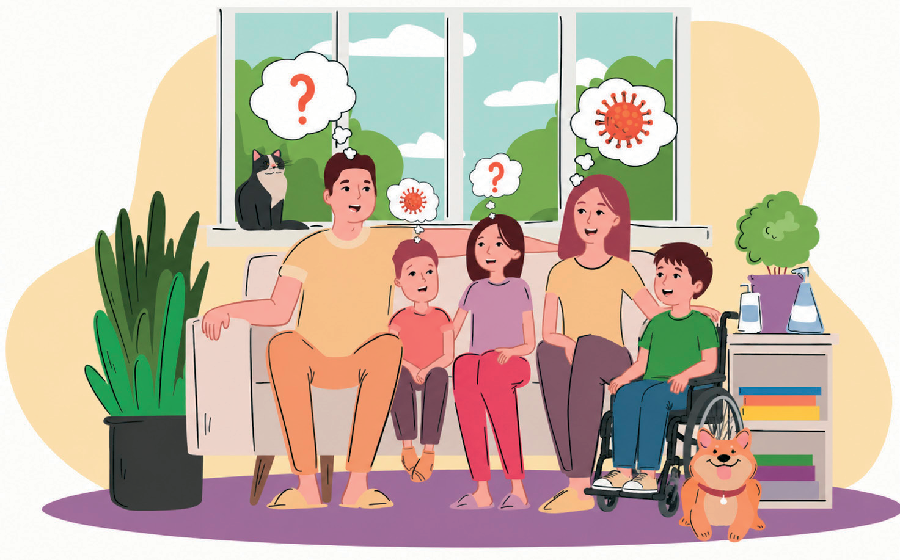

Mirëkuptimi, solidariteti, empatia dhe respekti ndaj të tjerëve
Solidariteti - vlerë njerëzore
Situata 2.
Në vitin 2020, një virus i quajtur Korona u përhap në shumë vende të botës dhe i frikësoi të gjithë. Gjatë asaj kohe, njerëzit u mbyllën në shtëpi për të mos u sëmurë - kjo u quajt karantinë.
Por edhe pse ishin të ndarë, shumë njerëz ndihmuan njëri-tjetrin. Ata treguan mirësi dhe solidaritet, duke ndihmuar ata që kishin më shumë nevojë, si të moshuarit ose të sëmurët. Bota u bashkua për të shpëtuar jetë dhe për ta kaluar më lehtë këtë kohë të vështirë.
